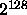
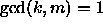

In their seminal 1976 paper, Diffie and Hellman suggested applying public-key cryptography to solving another important problem of secure communication: Suppose you want to send a message by electronic mail. How can people who receive the message be sure that it really comes from you--that it is not a forgery? What is required is some scheme for marking a message in a way that can be easily verified, but cannot be forged. Such a mark is called a digital signature.
In order to perform digital signatures, one generally makes use of
some standard message-digest function (also called a hash
function) that transforms an arbitrary length string into a single
number of uniform length. We've provided a procedure
message-digest that performs this operation. It takes an arbitrary
string and returns a number between 0 and  as its
result.
A digital signature scheme consists of two procedures, one that signs messages and one that verifies signatures. Signing a message uses the secret information in a key system. Verification uses the corresponding public key. The idea is that anyone can have the public key and thus verify the signature, but only the person who knows the secret value x in the key system could have produced the signature. This is like the opposite of public-key encryption, where anyone can encrypt the message, but only the person with the secret can decrypt the message. A verified signature attests to the facts that
There are many (in fact, an infinite number) of signature schemes. The one we present, called ElGamal signatures, is closely related to ElGamal encryption as described above.
To sign a message M (which may itself be encrypted or not) Alyssa first applies the message digest function to M and reduces that modulo p to produce a number h. Then she uses h together with the values p, g, x in her key system as follows:
To verify a signed message M, r, s, using Alyssa's public key p, g, y:
The algebra that shows why this works is a bit messy, but it is straightforward to check. (Trust us.) The main point to remember is that anyone can verify a signature, but only the person with the secret x information from the key system can produce the signature. Notice that if we can crack someone's public key, we can then forge that person's digital signature.
Here is the procedure that signs a message, using the information in a key system to implement the steps above.
(define (sign message key-system)
(let ((p (key-system-p key-system))
(g (key-system-g key-system))
(x (key-system-x key-system)))
(let ((h (modulo (message-digest message) p))
(k (good-k p)))
(let ((r (expmod g k p))
(d (invert-modulo k (- p 1))))
(let ((s (modulo (* d (- h (* x r))) (- p 1))))
(make-signature r s))))))
Make-signature here is another data constructor, which combines the two parts into a structure. You get the parts back using the selectors signature-r and signature-s.
Good-k finds a random number k with . It's easy: just keep picking values for k until you find a good one:
(define (good-k p)
(let ((k (choose-random p)))
(if (= (gcd k (- p 1)) 1)
k
(good-k p))))
The only hard part is invert-modulo, which finds a number d such that . We'll discuss that below.
We'll also leave it to you to implement the corresponding verify procedure, which takes the message (a string), a signature (i.e., a pair r and s), and a public key, and checks the signature.
The number d required for the signature must satisfy , where m=p-1. Using the definition of equality modulo m, this means that d must satisfy the equation em + dk=1 where e is a (negative) integer. One can show that a solution to this equation exists if and only if . The following procedure generates the required value of d, assuming that we have another procedure available which, given two integers a and b, returns a pair of integers (x,y) such that ax+by=1.
(define (invert-modulo k m)
(if (= (gcd k m) 1)
(let ((y (cadr (solve-ax+by=1 m k))))
(modulo y m)) ;just in case y was negative
(error "gcd not 1" k m)))
This procedure uses the Scheme primitive list data constructor. Given two (or more) items, list combines them into a single structure called a list. The selector car returns the first item in the list, and the selector cadr returns the second item. List structure will be formally introduced in lecture on February 19th, but the simple explanation here is all you need now for this problem set.
Solving ax+by=1 can be accomplished by a neat recursive trick that
is closely related to the recursive GCD algorithm in section
1.2.5 of the text. Let q be the integer quotient of a by b, and let
r be the remainder of a by b, so that a=bq+r.
Now (recursively) solve the equation
and use and  to generate x and y. We'll leave
to you the details of how to write the actual procedure. (Ask in
recitation.)
to generate x and y. We'll leave
to you the details of how to write the actual procedure. (Ask in
recitation.)